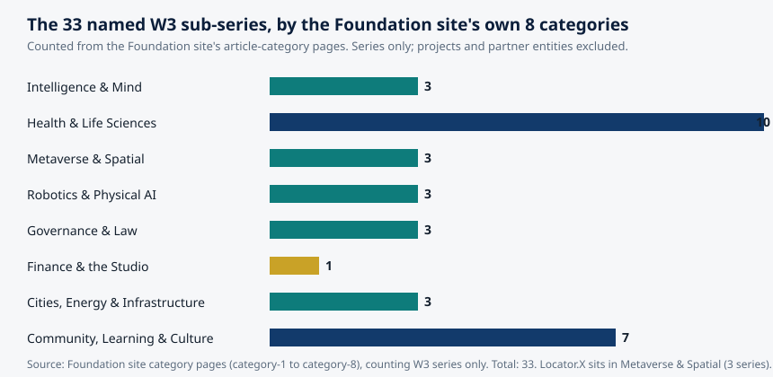
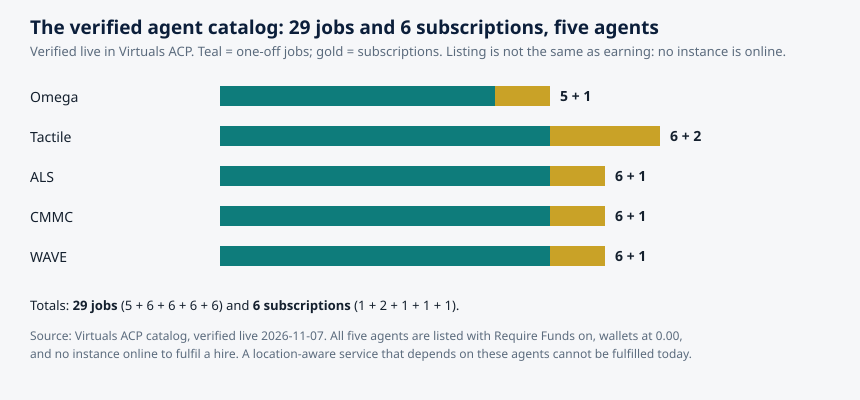

Article 59 · Locator.X · AGI Future Foundation
What a Location-Aware World Can and Cannot Know About You
This article is about the limits of location knowledge: what a system that knows where you are can actually learn about you, and what it cannot, however much data it collects. The first two articles in this series covered how positioning works and what the law says about it. This one asks the question both of them left open: what does it mean to know where someone is?
Chart: the verified agent catalog. Source: Virtuals ACP, verified live 2026-11-07. Teal = one-off jobs; gold = subscriptions. Listing is not the same as earning: no instance is online.
What is true, and what is not yet true
This article is about the limits of location knowledge: what a system that knows where you are can actually learn about you, and what it cannot, however much data it collects. The first two articles in this series covered how positioning works and what the law says about it. This one asks the question both of them left open: what does it mean to know where someone is?
Here is what is true. The limits described here are real. They come from physics, from the mathematics of inference, and from the documented behaviour of location systems. The facts about Locator.X come from the Foundation's own records and site: a name and a number in the April 2026 internal W3 list, a planned focus on location, finding, and navigation, and an anchored metaverse fabric at 21.097, 142.693 whose definition is published but whose assets are not yet hosted.
Here is what is not yet true. Locator.X has no verified product, service, dataset, location-data policy, user, partner, or Steward Council, and this article does not invent any of those things. The anchored fabric does not render fully in Artemis, because the roughly two hundred GLB assets and the map.wasm module it references are not hosted. Zero worlds are live on RP1, and no fabric or service for this series has ever been attached there. The five agents listed in Virtuals ACP, with 29 jobs and 6 subscriptions verified live, have no instance online to fulfil a hire. A location-aware world that depended on them could not be served today.
1. The coordinate is not the place
A coordinate looks like knowledge. Two numbers, 21.097 and 142.693, written with three decimal places, suggest a precision of about a hundred metres and a certainty to match. They are the anchor of the Locator.X fabric, the one verifiable location claim the series has made. But a coordinate is not a place. It is an address in a reference system, and the reference system is doing most of the work. A coordinate is only meaningful inside a frame: GPS uses WGS 84, a building's indoor system uses a local frame, and a virtual world uses a frame defined by the world itself. The Locator.X anchor is a pair of numbers in the fabric's own frame, a location for a future build, not a latitude and longitude on the Earth. It does not tell a visitor how to get there, what is nearby, or what is there when they arrive, and it says nothing about real-world places at all.
That gap, between the numbers and the place, is the first limit of location knowledge, and it runs through everything that follows. A system can know a coordinate with great precision and still know nothing about the place it names. It does not know whether the coordinate is a home, a workplace, a clinic, or an empty field. It does not know who is there, or why, or what the place means to them. It knows a point. The meaning of the point has to come from somewhere else: from a map, from a database, from a person who says what the place is. And every one of those sources can be wrong, out of date, or incomplete, in ways the coordinate itself never reveals.
The second limit follows from the first. A coordinate is a measurement, and a measurement has an error. GPS.gov states that a smartphone under open sky is typically accurate to within a 4.9 metre radius, and that accuracy worsens near buildings, bridges, and trees. Four point nine metres is the length of a large car. It is the difference between one side of a street and the other, between a building and the one next to it, between a room and the corridor outside it. A location-aware world that treats a coordinate as exact is treating a measurement as a fact, and it will be wrong in exactly the cases where being wrong matters most: at boundaries, at doorways, at the edge of a geofence.
The third limit is that a coordinate is a snapshot. It says where a device was at one moment, not where it is now, and not where it will be. Location data ages fast: a position from ten minutes ago is history, not knowledge. The honest statement of a location is not a point but a circle, with a radius for the uncertainty and a timestamp for the age, and a system that hides either is hiding what it does not know.
2. What a location actually tells you
Given those limits, what can a location-aware system actually learn? Less than its builders usually hope, and more than its users usually fear. The honest answer is a short list, and it is worth writing down, because it is the list against which every claim about location intelligence should be checked.
A location tells you presence: that a device was at a place, at a time, within a stated uncertainty. That is the whole of it, and it is a real thing. Presence is enough for navigation, for delivery, for finding a lost object, for knowing whether a vehicle has arrived. It is the foundation of every legitimate use of location, and it is also the limit of what a single location can say.
A sequence of locations tells you movement: direction, speed, and route. A trace of positions over time shows where a device went, how fast, and by which path. Movement is enough for traffic analysis, for route planning, for understanding how people actually move through a city. It is also the beginning of the inferences that make location data sensitive, because movement over time reveals routine.
A long sequence tells you routine: the places a device returns to, the times it returns, the pattern of its days. Routine is where location stops being a measurement and starts being a biography. The previous article in this series described the research: four randomly chosen points from a mobility trace uniquely identify 95 percent of people in a dataset of 1.5 million, because the pattern of movement is itself an identifier.
And that is where the list ends. A location, however precise, however long the trace, does not tell you intent. It does not tell you why a person went somewhere, what they did there, what they thought about it, or what they will do next. It does not tell you whether a visit was welcome or reluctant, planned or accidental, meaningful or trivial. It does not tell you whether two people in the same place knew each other, or were strangers who happened to share a room. It does not tell you what a place means to the person who is there. All of that has to be inferred, and inference is where location knowledge goes wrong, because the inference is a guess about a human being, made from numbers that were never designed to carry it.
3. The inference gap
The gap between what a location says and what people infer from it is the most dangerous part of a location-aware world, because it is invisible to the people building it. An inference looks like a fact when it is displayed on a screen with the same confidence as a measurement. It is not a fact. It is a hypothesis, and it should be labelled as one.
Consider the most common inference in location work: home. A system that sees a device at the same place every night, between midnight and six in the morning, will infer that the place is the person's home. The inference is usually right. It is also sometimes wrong: the person could be a night-shift worker, a carer, a guest, a person sleeping somewhere that is not their home because their home is unavailable to them. The system cannot tell the difference, because the data is identical in both cases. The inference is a bet, and the bet is made with the person's privacy as the stake.
Consider the inference of a visit's meaning. A device that spends an hour at a clinic is probably there for a medical reason. But it could be there to visit a friend, to deliver something, to use the car park, to wait for a bus that stops outside. The place does not say why the person is there, and the duration does not say either. A system that records "visited a clinic" has recorded a fact about a place and a time. A system that records "sought medical care" has recorded an inference, and it has recorded it as if it were a fact, which it is not.
The inference gap widens as the inferences get more ambitious. A system that tries to infer mood, intent, belief, or health from location is building a tower on a foundation of sand. The correlations exist: people who visit certain places tend to have certain characteristics, and the statistics will show it. But a correlation across a population is not a fact about an individual, and applying it to an individual is how a system produces a confident, specific, and wrong statement about a real person. The previous article's example is the warning: the FTC's enforcement cases were built on data that could track people to reproductive health clinics, places of worship, and domestic abuse shelters. The tracking was possible because the inference from place to meaning is easy to make and hard to resist. The harm was real because the inference was treated as knowledge.
A location-aware world that is honest about the inference gap does three things. It labels inferences as inferences, with the confidence and the basis stated. It gives the person the ability to correct them, because the person is the only authority on what a place means to them. And it refuses to make inferences it cannot support, even when the data makes them tempting. That restraint is not a limitation on the system. It is the system working correctly.
4. What the machine gets wrong
Even before inference, the machine gets things wrong, and the errors have patterns. The first article in this series described them in detail: multipath, where a satellite signal bounces off a glass building and arrives late, putting the blue dot tens of metres from where it should be; blockage, where tunnels and car parks reduce the satellites in view below the four needed for a fix; interference, where jamming denies positioning and spoofing supplies a confident, wrong position; and the map itself, which can be wrong while the position is right. These are not edge cases. They are the normal operating conditions of positioning in a city.
There are two more errors that belong in this article, because they are errors of the world rather than of the radio.
The first is staleness. A location-aware world is a database of places, and databases go out of date. Businesses close. Buildings are demolished. Roads are rerouted. A place that was a clinic last year may be a shop today, and a system that still calls it a clinic is making an inference from a dead fact. The error is silent: nothing in the coordinate says the place has changed. A location-aware world needs a freshness policy, a statement of how often its places are verified and what happens when they are not, and it needs to show the age of its knowledge alongside the knowledge itself.
The second is the missing place. A map is a selection, and every selection leaves things out. Informal settlements, unmarked paths, places that do not appear on commercial maps, communities that have not been surveyed, all of these are invisible to a system that trusts its map. A location-aware world that only knows the places on its map will systematically misunderstand the people whose lives happen in the places it left out, and it will do so without ever noticing, because the absence produces no error message.
Both errors point to the same conclusion: a location-aware world is only as good as its knowledge of the world, and its knowledge of the world is always partial, always ageing, and always shaped by who did the mapping. A system that presents its locations as complete and current is misrepresenting what it knows.

5. The anchored world: what Locator.X has, and what it does not have
Locator.X is unusual among the 33 named W3 sub-series, and the reason is specific: it is one of the six anchored worlds in the Foundation's metaverse work, and the anchor is a pair of numbers, 21.097, 142.693. Its fabric JSON is live on GitHub Pages under the WorldForge-Browser my-fabric directory. That is a real, verifiable fact, and it is more than most of the other series can claim: the remaining 28 series have no anchored fabric verified at all.
It is also, on its own, very little. The fabric references on the order of two hundred GLB model files plus the map.wasm module, and those assets are not hosted, so the world does not render fully in Artemis yet. That is the verified state, stated in the Foundation's own site article on the series: a published fabric definition, an anchored location, and an incomplete render because the assets it points to are not in place.
The world is not on RP1 either. Zero worlds are live on RP1, no fabric or service for this series has ever been attached there, and the RP1 Attach wizard needs a live metaverse-server endpoint before any attach can happen.
What would have to happen next is equally specific, and it is worth stating, because it is the difference between a location claim and a location service. Host the referenced GLB assets and map.wasm at the paths the fabric expects. Verify the render in Artemis, and record the date and the result. Then, and only then, ask what the world is for: who visits it, what they do there, and what, if anything, it knows about them. A world with coordinates is, in a small way, already a location claim: this place, at these numbers, exists in the Foundation's map. But a coordinate on its own is not a location service. It does not tell a visitor how to get there, what is nearby, or what is there when they arrive, and it says nothing about real-world places at all.
The repository for the series adds context: Locator.X on GitHub records real-estate predictive tooling, a 92-lesson Academy, and 85 modules, and a landing stub, locatorx-site, describes real-estate analytics and mapping for the smart city's physical layer. None of that is a location service, and none of it is a metaverse world. It is tooling and teaching material.
6. Who is in the world: agents, listed but offline
A location-aware world is not only a map. It is a place where things happen, and in the Foundation's intended model, the things that happen are done by agents: five agents listed in Virtuals ACP, with 29 jobs and 6 subscriptions verified live. The catalog is real, and it is worth setting out, because it is the only verified statement of what the Foundation's agents can be hired to do.

The numbers are exact: Omega offers 5 jobs and 1 subscription; Tactile offers 6 jobs and 2 subscriptions; ALS offers 6 jobs and 1 subscription; CMMC offers 6 jobs and 1 subscription; WAVE offers 6 jobs and 1 subscription. That is 29 jobs and 6 subscriptions in total, across five agents, all listed with Require Funds on.
And none of it can be fulfilled today. No instance of any of the five agents is online. Their wallets are at 0.00. The hosting cost, 80 USDC on Base plus 20 USDG on Robinhood per month, has not been met, and no hire can be fulfilled until an instance is deployed and funded. Listing is not the same as earning, and a catalog is not a service.
That matters for Locator.X in a specific way. The Foundation's intended studio model staffs each series with eight agent roles, research, routing, drafting, coordination, tracking, monitoring, scouting, and grant drafting, plus a coordinator for any unfilled role. Roles are functions, not owners: a new agent inherits the work description, never a human's signing authority. But a role that is listed and not staffed, in a world that is anchored and not rendering, is a plan twice removed from a service. The honest statement is that the series has a catalog and an anchor, and neither is yet a working thing.
7. What a location-aware world would need to be honest
If Locator.X is ever built as a location-aware world, the three articles in this series set its requirements, and they are requirements a human Steward Council would have to meet in writing before the world opens to anyone.
First, a precision budget. The world would have to state, for each of its functions, how accurate the location needs to be, and how accurate it actually is. Navigation needs metres. Finding a room needs a metre or two. Finding a shelf needs centimetres. A world that promises centimetre accuracy with a phone that delivers 4.9 metres is promising something it cannot deliver. The figures from the first article give the menu: 4.9 metres from a phone under open sky, 1 to 2 metres from Wi-Fi RTT, 10 to 30 centimetres from UWB, each with its own cost in anchors, infrastructure, and complexity.
Second, uncertainty on display. Every location the world shows should carry its uncertainty with it: a circle, not a point, with a radius for the error and a timestamp for the age. A visitor who sees a circle knows how much to trust the position. A visitor who sees a point does not, and will trust it further than it deserves. The same applies to inferences: anything the world infers about a person should be labelled as an inference, with its basis and its confidence stated, and with a way for the person to correct it.
Third, consent that means something. The previous article set the standard: affirmative express consent, to a specific use, of specific data, for a specific purpose, revocable at any time, with revocation as easy as giving it. A location-aware world would have to implement that standard in its design, not in its terms of service: consent asked at the moment of collection, for the purpose at hand, with the approximate-location option offered where exact location is not needed, and with deletion that works, including from backups and from any third party the data was shared with.
Fourth, a freshness policy. The world would have to state how often its places are verified, what happens when a place changes, and how the age of its knowledge is shown to its users. A map that never admits it is out of date is a map that lies by omission.
Fifth, human accountability. In the Foundation's intended model, the decision to collect a person's location, to keep it, to share it, or to delete it is a human decision every time, by a named steward, on a written record. Agents prepare and operate; humans decide. No Steward Council for any series is verified as seated, so no series has an effective council, and until stewards are named, consenting, and holding keys, a series is not operating. A location-aware world without a named human accountable for its location decisions is a world without anyone to answer when the decisions are wrong.
Sixth, separation. Locator.X is one of 33 named sub-series, and the Foundation's intended model segregates each series' assets, liabilities, and records from every other series and from the Foundation. A location-aware world that mixed its location data with another series' data would be violating the segregation the model requires, and it would be creating a combined dataset more revealing than either part alone.
8. The limits that will not go away
There are limits that engineering will not remove, and a location-aware world should be built around them rather than in denial of them.
The first is physics. Satellite signals are weak, buildings block them, glass reflects them, and no amount of software will make a phone's GPS accurate to a centimetre indoors. UWB can do centimetres, but only at short range, only with anchors, and only relative to the anchors, not to the Earth. Every positioning technology has a range, an accuracy, and a cost, and the three trade against each other.
The second is inference. A location is a measurement, and a measurement is not a meaning. The gap between the two is not a technical problem to be solved with more data. It is a permanent feature of the relationship between numbers and people, and more data narrows it without closing it.
The third is trust. Location data is sensitive because it reveals a life, and people know it. The history in the previous article is a history of that knowledge being violated: data sold without consent, clinics and shelters tracked, military bases exposed by a heatmap, Secret Service agents found through their running routes. Each violation makes the next location service harder to trust, and trust, once lost, is not restored by a better privacy policy. It is restored by a record of restraint: by collecting less, by keeping it for a shorter time, by deleting it when asked, by showing uncertainty, by refusing inferences that cannot be supported.
The fourth is the limit of the series itself. Locator.X is a proposed series, not a formed, funded, or operating one. It has an anchor, a catalog, a repository, and a plan. It does not have a world that renders, an agent that answers, a policy that governs, or a council that decides. The distance between what it has and what it would need is the work, and the work is large: hosting assets, verifying renders, seating stewards, writing policies, deploying agents, funding hosting, and doing all of it in the open, with the uncertainties shown rather than hidden. That is not a discouraging conclusion. It is an honest one, and honesty is the precondition for everything else.
Glossary
Reference frame: The coordinate system a position is measured in. GPS uses WGS 84; a building's indoor system uses a local frame; a virtual world uses its own frame. A coordinate is meaningless without its frame.
Presence: The fact that a device was at a place, at a time, within a stated uncertainty. The whole of what a single location can say.
Routine: The pattern of places a device returns to, and the times it returns. A routine is where location stops being a measurement and starts being a biography.
Inference gap: The distance between what a location measurement says and what people infer from it: intent, meaning, relationship, health, belief. Inferences are hypotheses, not facts.
Fabric: In the Foundation's metaverse work, a world's definition file, listing its assets and its location. The Locator.X fabric is live on GitHub Pages; its referenced assets are not yet hosted.
Artemis: The viewer in which the Foundation's metaverse fabrics are meant to render. The Locator.X fabric does not render fully in Artemis yet, because its assets are not hosted.
RP1: A metaverse platform. Zero worlds are live on RP1, and no fabric or service for Locator.X has ever been attached there.
Precision budget: A stated requirement for how accurate a location must be for each function of a system, and a measurement of whether the system meets it.
Data minimisation: The principle of collecting only the data needed for a stated purpose, keeping it only as long as needed, and deleting it when it is no longer needed.
Frequently asked questions
It is the location of the Locator.X fabric in the fabric's own coordinate frame: a defined place for a future build. It is not a latitude and longitude on the Earth, and it does not tell a visitor how to get there, what is nearby, or what is there when they arrive. The fabric JSON is live on GitHub Pages, but the roughly two hundred GLB assets and the map.wasm module it references are not hosted, so the world does not render fully in Artemis yet.
No. A location tells you where a device was, and a trace tells you where it went and how often it returned. It does not tell you why a person went somewhere, what they did there, or what they thought about it. Anything a system claims to know about intent, mood, belief, or health from location alone is an inference, and it should be labelled as one.
A mobility trace is highly identifying: four randomly chosen points uniquely identify 95 percent of people in a dataset of 1.5 million, as de Montjoye and colleagues showed in 2013. But identifying a trace is not the same as knowing a person. The trace reveals a pattern of places, not a name, a history, or a character.
Five agents are listed in Virtuals ACP with 29 jobs and 6 subscriptions verified live, but no instance of any of them is online, their wallets are at 0.00, and the hosting cost has not been met. Listing is not the same as earning, and no hire can be fulfilled until an instance is deployed and funded.
Host the fabric's referenced assets and verify the render in Artemis. Seat a Steward Council with named, consenting humans. Write and publish a location-data policy answering what is collected, from whom, with what consent, how precisely, how long it is kept, who can see it, and how a person opts out or deletes it. Deploy and fund the agents it depends on. And do all of it with uncertainty shown, inferences labelled, and a named human accountable for every location decision.
Sources
- GPS.gov, "GPS Accuracy" — smartphone accuracy of 4.9 m under open sky; signal-in-space commitment of 2.0 m user range error, 95 percent of the time.
- de Montjoye, Y.-A., Hidalgo, C. A., Verleysen, M., & Blondel, V. D., "Unique in the Crowd: The privacy bounds of human mobility," Scientific Reports 3, 1376 (2013) — four spatio-temporal points uniquely identify 95% of 1.5 million individuals.
- AGI Future Foundation, Locator.X: Knowing Where Things Are — the Foundation site article on W3 Series 8: planned focus, anchored fabric at 21.097, 142.693, fabric JSON live, assets not hosted, no verified partner, user, publication, location-data policy, or Steward Council; zero worlds live on RP1; no RP1 attach.
- Locator.X repository — 92-lesson Academy, 85 modules, 50-state guides.
- locatorx-site repository — landing stub: real-estate analytics and mapping for the smart city's physical layer.
- TechCrunch, "Fitness app Strava exposes the location of military bases" (Jan 28, 2018) — heatmap finding; pattern revealing what individual records do not.
- BleepingComputer, "FTC to ban data broker Kochava from selling Americans' location data" — FTC settlement: no sale of precise location data without affirmative express consent.
- Foundation filing documents reviewed 2026-11-03 — AGI Future Foundation, California Nonprofit Public Benefit Corporation, Entity No. B20260196664, Articles filed 2026-04-24; no IRS 501(c)(3) determination letter on file; W3 LLC formation and per-series designation not verified in filings.
- Virtuals ACP catalog, verified live 2026-11-07 — five agents, 29 jobs and 6 subscriptions (Omega 5+1, Tactile 6+2, ALS 6+1, CMMC 6+1, WAVE 6+1); Require Funds on; wallets 0.00; no instance online.
Goals served: foundation-funding (an honest account of what the series can and cannot do is the kind of public work that supports the Foundation's fundraising case); agent-monetization (the article states the catalog exactly and says plainly that no hire can be fulfilled until instances are deployed and funded); smartciti-learners (the inference gap and precision budgets are core knowledge for the SmartCiti.X learner platform); corporate-safe (the article keeps filed fact and intended plan visibly apart throughout).